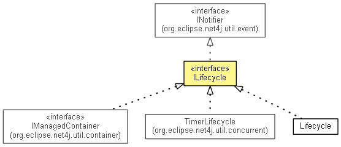

org.eclipse.net4j.util.lifecycle
Interface ILifecycle
- All Superinterfaces:
- INotifier
- All Known Subinterfaces:
- IManagedContainer, IPluginContainer
- All Known Implementing Classes:
- Cache, CacheMonitor, ChallengeNegotiator, ChallengeResponseNegotiator, Container, DelegatingRegistry, FileUserManager, FiniteStateMachine, HashMapDelegatingRegistry, HashMapRegistry, Lifecycle, ManagedContainer, Negotiator, QueueRunner, QueueWorker, QueueWorkerWorkSerializer, Randomizer, ReferenceQueueWorker, Registry, ResponseNegotiator, RWLockManager, RWOLockManager, TimerLifecycle, UIQueueRunner, UserManager, Worker
- public interface ILifecycle
- extends INotifier

An entity that has a well-defined lifecycle and can be activated or
deactivated.
A lifecycle can fire the following events:
activate
void activate()
throws LifecycleException
- Throws:
LifecycleException
deactivate
Exception deactivate()
getLifecycleState
LifecycleState getLifecycleState()
- Since:
- 3.0
isActive
boolean isActive()
- Since:
- 3.0
Copyright (c) 2004 - 2012 Eike Stepper (Berlin, Germany) and others.